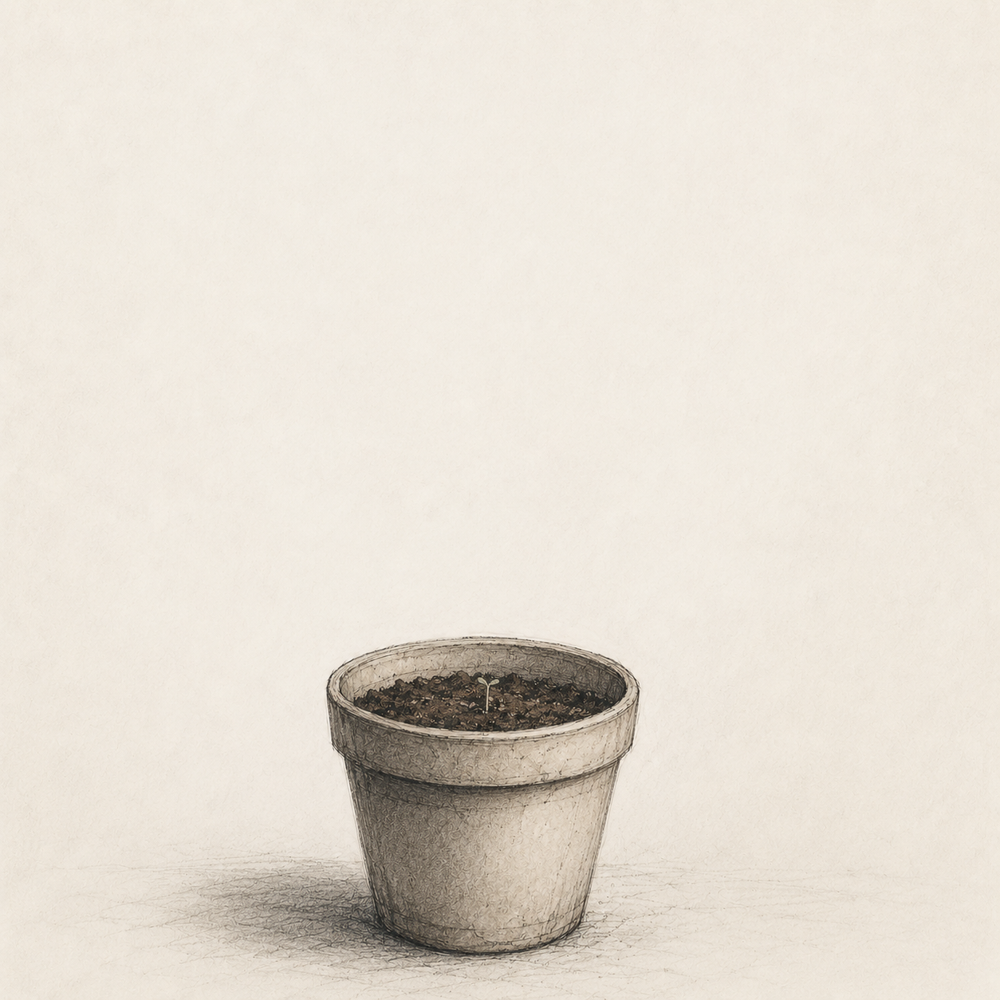

STEP 3 OF 3

Some things don't grow back.
And that's okay.
END OF TUTORIAL
Now that you have learned to wait, perhaps you are ready for other impossible things.
Continue to How to become a tree
Or visit How to be visible to others by your classmate.